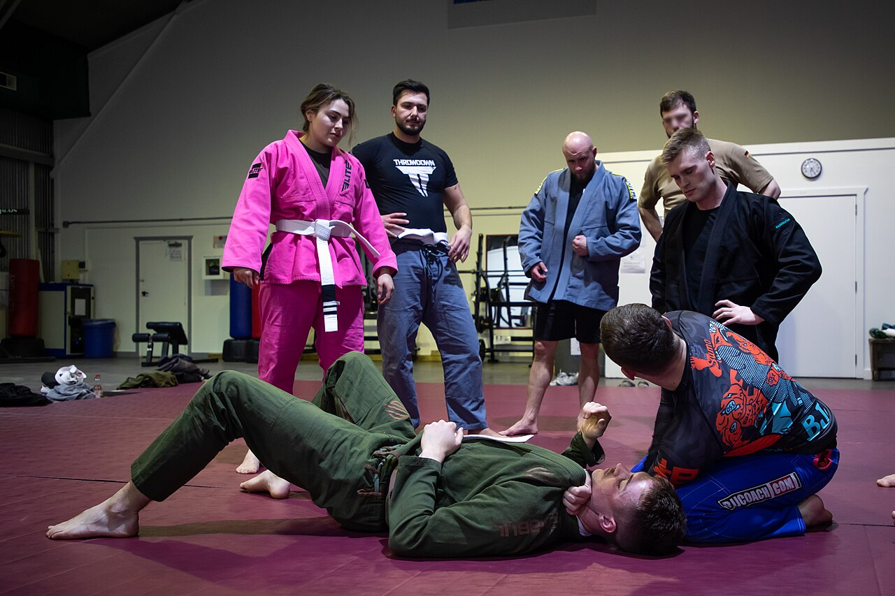

Co dělat
- Držet tlak přes hrudník na šíji a lopatky soupeře.
- Kontrolovat vzdálený loket proti útěku.
- Střídat front headlock s back take podle reakce.
BJJ POSITION
Klíčová moderní pozice pro přechod na záda i silné choke útoky.

Turtle / Front Headlock je přechodový uzel mezi scramble fází, kontrolou a ukončením. Rozhoduje grip na hlavu a paži.